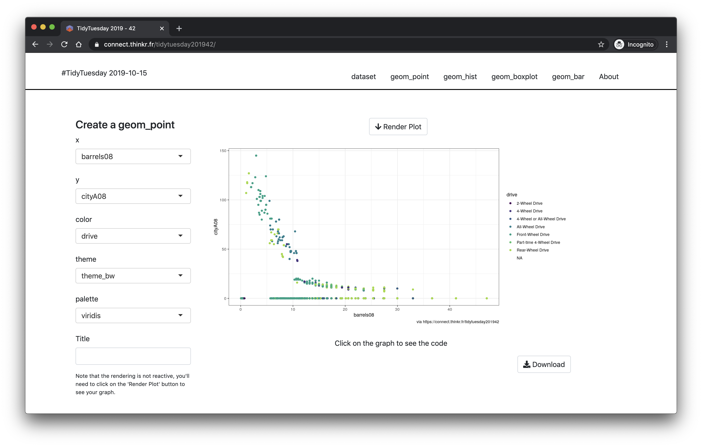

Chapter 3 Structuring your Project
3.1 Shiny App as a Package
A robust, maintenable and shareable Shiny application finds its way through a R package structure.
In the next chapter you will be introduced to the {golem} package, which is an opinionated framework for building production-ready Shiny Applications.
This framework starts by creating a package skeleton waiting to be filled.
But, in a world where Shiny Applications are mostly created as a series of files, why bother with a package?
3.1.1 What is your organisation for a Shiny App project?
You may not realise yet, but solutions you give to the questions and problems you have when you want to put your app in production are in the direction of building a package.
Indeed, let us see that the other way round.
Think about your last Shiny app, which was created as a single-file (app.R) or two files app (ui.R and server.R).
You put them in a folder.
Now, let’s review what you will need next for a robust application.
First, metadata. In other words, the name of the app, the version number (which is crucial to any serious, production-level project), what the application does, who to contact if something goes wrong.
Second, you need to find a way to handle the dependencies. Because you know, when you want to push your app into production, you can not have this conversation with I.T. people:
IT: Hey, I tried to
source("app.R")but I got an error.R-dev: What is the error?
IT: It says “could not find package ‘shiny’”.
R-dev: Ah yes, you need to install {shiny}. Try to run
install.packages("shiny").IT: OK nice. What else?
R-dev: Let me think, try also
install.packages("DT")… good? Now tryinstall.packages("ggplot2"), and …[…]
IT: Ok, now I source the ‘app.R’, right?
R-dev: Sure!
IT: Ok so it says ‘could not find function
runApp()’R-dev: Ah, you got to do
library(shiny)at the beginning of your script. Andlibrary(purrr), andlibrary(jsonlite)*.
* Which will lead to a Namespace conflict on the flatten() function that can cause you some debugging headache.
So, hey, it would be cool if we could have a Shiny app that only imports specific functions from a package, right?
So yes, dependencies matter. You need to handle them, and handle them correctly.
Third, let us say you are building a big app. Something with thousands of lines of code. Handling a one-file or two-file shiny app with that much lines is just a nightmare. So, what to do? Let us split everything into smaller files that we can call! Maybe, we can store these files in a specific directory. We can name this directory, “R” for instance.
Last but not least, we want our app to live long and prosper, which means we need to document it: each small piece of code should have a piece of comment to explain what these specific lines do. The other thing we need for our application to be successful on the long term is tests, so that we are sure we are not introducing any regression along development.
Oh, and that would be nice if people could get a tar.gz and install it on their computer and have access to a local copy of the app!
OK, so let’s sum it up: we want to build an app.
This app needs to have metadata and to handle dependencies correctly, which is what you get from the DESCRIPTION + NAMESPACE files of a package.
Even more practical is the fact that you can do “selective namespace extraction” inside a package, i.e. you can say “I want this function from this package”.
Also, this app needs to be split up in smaller .R files, stored in a specific directory, which is the way a package is organized.
And I do not need to emphasize how documentation is a vital part of any package, so we solved this question too here. So is the testing toolkit.
And of course, the “install everywhere” wish comes to life when a Shiny App is in a package.
3.1.2 Document and test
As for any software in production, assuring the usability and sustainability of your app will be through documentation and preventive testing.
3.1.2.1 Documenting your app
Documentation of your Shiny application is the documentation of features explained to future developers (likely you in the future) and documentation for the users. Documenting packages is a mandatory step for any R developer. As for any package, there are different places for documentation :
- A ‘README’ file at the root of your package, which will document installation and the general use, easily rendered in your graphical interface for git.
- ‘Vignettes’ that explain how to use your app.
There are also used to detail the core functions of the application as a static document, ideally one vignette per shiny page / tab.
Use them as the laboratory for setting up your Shiny features with reproducible examples, but also as the place to build your user guide.
- Functions documentation. Any exported function should have its own documentation, hence you are “forced” to document any user facing-function. Use the vignette reproducible examples to document the use of functions and their parameters.
- A {pkgdown} that can be used as an external link to share the documentation of your application, i.e. installation steps for I.T., internal features use for developers and` user guide.
3.1.2.2 Testing
Testing production apps is a wide question, here, we will just stick to unit tests inside a package, with the help of {golem} for Shiny specific structures.
Nothing should go to production without being tested. Nothing.
Frameworks for R package testing are robust and widely documented.
So you do not have to put any extra-effort here: use a canonical testing framework like {testthat}.
Learning how to use it is not the subject of this chapter, so feel free to refer to the documentation.
See also Chapter 5 of the workshop: “Building a package that lasts”.
What should you test?
First of all, as we’ve said before, the app should be split between the UI part and the back-end (or ‘business logic’) part. These back-end functions are supposed to run without any interactive context, just as plain old functions. So for these ones, you can do classical tests. As they are back-end functions (so specific to a project),
{golem}will not provide any helpers for that.For the UI part, remember that any UI function is designed to render an HTML element. You can save a file as HTML and compare it to a UI object with the
golem::expect_html_equal().
library(shiny)
ui <- tagList(h1("Hello world!"))
htmltools::save_html(ui, "ui.html")
golem::expect_html_equal(ui, "ui.html") # OK
# Changes
ui <- tagList(h2("Hello world!"))
golem::expect_html_equal(ui, "ui.html") # ErrorThis can for example be useful if you need to test a module. A UI module function returns a HTML tag list, so, once your modules are set, you can save them as HTML file and use them inside tests.
my_mod_ui <- function(id) {
ns <- NS("id")
tagList(
selectInput(ns("this"), "that", choices = LETTERS[1:4])
)
}
my_mod_ui_test <- tempfile(fileext = "html")
htmltools::save_html(my_mod_ui("test"), my_mod_ui_test)
# Some time later, and of course saved in the test folder,
# not as a temp file
golem::expect_html_equal(my_mod_ui("test"), my_mod_ui_test) # OK{golem} also provides two functions, expect_shinytag() and expect_shinytaglist(), which test if an object is of class "shiny.tag" or "shiny.tag.list".
- Testing package launch: when launching
golem::use_recommended_tests(), you will find a test built on top of{processx}that allows to check if the application is launch-able. Here is a short description of what happens:
# Standard testthat things
context("launch")
library(processx)
testthat::test_that(
"app launches",{
# We are creating a new process that runs the app
x <- process$new(
"R",
c(
"-e",
# As we are in the tests/testthat dir, we are moving
# to the root of the package before launching the whole package
# and we try to launch the app
"here::here(); pkgload::load_all(); run_app()"
)
)
# We leave some time for the app to launch
# Configure this according to your need
Sys.sleep(5)
# We check that the app is alive
expect_true(x$is_alive())
# We kill it
x$kill()
}
)Note: this specific configuration will possibly fail on continuous integration platform as Gitlab CI or Travis.
A workaround is to, inside your CI .yml file, first install the package with remotes::install_local(), and then replace the setwd (...) run_app() command with myuberapp::run_app() (if your package is named {myuberapp}).
For example:
- in
.gitlab-ci.yml:
test:
stage: test
script:
- echo "Running tests"
- R -e 'remotes::install_local()'
- R -e 'devtools::check()'- in
test-golem.R:
3.1.3 Deploy
Putting your application in production means that it should be deployed on a computer or a server somewhere to be used by other people than the developers.
3.1.3.1 Local deployment
With a package, you can use classical tools to locally install your Shiny application.
Inded, a Shiny App as a standard R package can be built as a tar.gz, sent to your colleagues, friends, and family, and even to the CRAN.
It can also be installed in any R-package repository.
You can then install your packaged App along with its dependencies using the appropriate remotes::install_*() command.
And, if you built your app with {golem}, you will launch the app using:
3.1.3.2 RStudio Connect & Shiny Server
Sending a Shiny application to a Rstudio product currently requires the correct R script at the root of your package directory.
These Rstudio platforms putting Shiny application into production expect a file app configuration, i.e. an app.R file or ui.R / server.R files.
To integrate your “Shiny App as a package” into Connect or Shiny Server, you can use two strategies:
- Use an internal package manager like RStudio Package Manager, where the package app is installed.
Once the package is available in your internal repository, you can create an
app.Rfile with only this small piece of code:
- Upload the complete content of the package directory to the server.
You will need an
app.Rfile at the root of the package:
# Load all R scripts and functions
pkgload::load_all()
# Launch the application
shiny::shinyApp(ui = app_ui(), server = app_server) This is the file you will get if you run golem::add_rconnect_file().
As you are in a package, you will have to hide the app.R file from package built by putting it in the .Rbuildignore file.
3.1.3.3 Docker containers
Docker containers can be used to embed a frozen OS that will launch your application in a safe environnement.
In order to dockerize your app, create a Dockerfile that list your package to be installed as in the local deployment with the appropriate remotes::install_*() function.
Then, use as a CMD R -e 'options("shiny.port" = 80, shiny.host = "0.0.0.0"); myuberapp::run_app()' so that your app will be launched when starting the Docker container.
Change the output port to the one you need.
Note that {golem} provides you the Dockerfile you need with golem::add_dockerfile().
3.2 Using Shiny Modules
Modules are one of the most powerful tool for building Shiny Application in a maintenable and sustainable way.
3.2.1 Why are we using Shiny modules?
Small is beautiful. Being able to properly cut a code in small modules helps the developers to build their mental model of the application (Remember “What is a complex Shiny Application?”). But what are these modules?
Shiny modules address the namespacing problem in Shiny UI and server logic, adding a level of abstraction beyond functions
Let us first untangle this quote with an example about what is the Shiny namespace problem.
3.2.1.2 A bite-sized code base
Build your application through multiple smaller application, easier to understand, develop and maintain, using shiny modules.
We assume that you know the R saying that “if you copy and paste something more than twice, you should make a function”. Then, how do we refactor the partially repetitive piece of code so that it is reusable?
Yes, you guessed right: using shiny modules. Shiny modules aim at three things: simplifying “id” namespacing, split the code base into a series of functions, and allow UI/Server parts of your app to be reused. Most of the time, modules are used to do the two first. In our case, we could say that 90% of the module we write are never reused13 ; they are here to allow us to split the code base into smaller, more manageable pieces.
With Shiny modules, you will be writing a combination of UI and server functions. Think of them as small, standalone Shiny apps, which output and handle a fraction of your global application. If you develop R packages, you probably tried to split your functions into series of smaller functions. With shiny modules, it is the exact same thing: you are, with just a little bit of tweaking, splitting your application into series of smaller applications.
3.2.2 When should you modularize?
We recommend you to modularise your application from the very beginning, no matter how big it is intended to be.
The overhead of writing a module compared to putting everything inside the app function is relatively low: it is even easier if you are working in a framework like {golem}, which promotes the use of modules from the very beginning of your application.
"Yes, but I just want to write a small app, nothing fancy
Production apps almost always started as a small Proof Of Concept. Then, the small POC becomes an interesting idea. Then, this idea becomes a strategical asset. And before you know it your ‘not-that-fancy’ app needs to become larger. You would better build solid foundations to your application.
3.2.3 A practical walk through
An example is worth a thousand words. Let us explore together the code of a Shiny application split into modules.
3.2.3.1 Your first Shiny Module
We can transform the above example that have two sliders and two action buttons into a Shiny application with a module. The module is small shiny application separated from the main code:
# Re-usable module
mod_ui <- function(id) {
ns <- NS(id)
tagList(
sliderInput(
inputId = ns("choice"),
label = "Choice",
min = 1, max = 10, value = 5
),
actionButton(
inputId = ns("validate"),
label = "Validate Choice"
)
)
}
mod_server <- function(input, output, session) {
ns <- session$ns
observeEvent( input$validate , {
print(input$choice)
})
}
# Main application
library(shiny)
app_ui <- function() {
fluidPage(
mod_ui(id = "mod_ui_1"),
mod_ui(id = "mod_ui_2")
)
}
app_server <- function(input, output, session) {
callModule(mod_server, id = "mod_ui_1")
callModule(mod_server, id = "mod_ui_2")
}
shinyApp(app_ui, app_server)Let us stop for a minute and decompose what we have here.
The server function of the module (mod_server()) is pretty much the same as before: you use the same code as the one you would use in any server part of a Shiny application.
The ui function of the module (mod_ui()) requires specific things. There are two new things: ns <- NS(id) and ns(inputId).
That is where the namespacing happens.
Remember the previous version where you differentiated your two “validate” buttons with slightly different namespaces: validate1 and validate2.
Here, we create namespaces with function ns() built with ns <- NS(id).
This line, ns <- NS(id), is added on top of all module ui functions and will allow building namespaces depending on the module id.
To understand what it does, let us try and run it outside of Shiny:
[1] "mod_ui_1-choice"And here it is, our namespaced id! With name combined with the module id.
Each call to a module with callModule() requires a different id argument that will allow creating various internal namespaces, preventing from id conflicts14.
Then you can have as many validate input as you want in your app, as long as this validate has a unique id inside your module.
3.2.3.2 Passing arguments to your modules
Shiny modules will potentially be reused and may need specific appearance and inputs. This requires using extra arguments to generate the UI and server conditionally.
Indeed, the app_ui contains a series of call to mod_ui(unique_id, ...) function, allowing additional arguments like any other function:
mod_ui <- function(id, button_label) {
ns <- NS(id)
tagList(
actionButton(ns("validate"), button_label)
)
}
mod_ui("mod_ui_1", button_label = "Validate Choice")
mod_ui("mod_ui_2", button_label = "Validate Choice, again")<button id="mod_ui_1-validate" type="button" class="btn btn-default action-button">Validate Choice</button>
<button id="mod_ui_2-validate" type="button" class="btn btn-default action-button">Validate Choice, again</button>The app_server side contains a series of callModule(mod_server, unique_id, ...), also allowing additional arguments like any other function.
As a live example, we can have a look at mod_dataviz.R from the {tidytuesday201942} Shiny application.
This application contains 6 tabs, 4 of them being pretty much alike: a side bar with inputs, an a main panel with a button and the plot. This is a typical case where you should reuse modules: if two or more parts are relatively similar, it is easier to bundle it inside a reusable module, and condition the ui/server with function arguments.

Here, are some examples of how it works in the module UI:
mod_dataviz_ui <- function(id,
type = c("point", "hist", "boxplot", "bar")) {
h4(
sprintf( "Create a geom_%s", type )
),
if (type == "boxplot" | type =="bar") {
selectInput(
ns("x"),
"x",
choices = names_that_are(c("logical", "character"))
)
} else {
selectInput(
ns("x"),
"x",
choices = names_that_are("numeric")
)
}
}And in the module server:
mod_dataviz_server <- function(input, output, session, type) {
if (type == "point") {
x <- rlang::sym(input$x)
y <- rlang::sym(input$y)
color <- rlang::sym(input$color)
r$plot <- ggplot(
big_epa_cars,
aes(!!x, !!y, color = !!color)
) +
geom_point() +
scale_color_manual(
values = color_values(
1:length(unique(pull(big_epa_cars, !!color))),
palette = input$palette
)
)
}
}Then, the UI of the entire application is:
app_ui <- function() {
# [...]
tagList(
fluidRow(
id = "geom_point", mod_dataviz_ui("dataviz_ui_1", "point")
),
fluidRow(
id = "geom_hist", mod_dataviz_ui("dataviz_ui_2", "hist")
)
)
}And the app_server() of the application:
app_server <- function(input, output, session) {
#callModule(mod_raw_server, "raw_ui_1")
callModule(mod_dataviz_server, "dataviz_ui_1", type = "point")
callModule(mod_dataviz_server, "dataviz_ui_2", type = "hist")
callModule(mod_dataviz_server, "dataviz_ui_3", type = "boxplot")
callModule(mod_dataviz_server, "dataviz_ui_4", type = "bar")
}3.2.4 Communication between modules
One of the hardest part about modules is sharing data across them.
There are at least three approaches: (i) returning reactive, (ii) the “stratégie du petit r” (to be pronounced with a french accent) or (iii) the “stratégie du grand R6”.
3.2.4.1 Returning values from the module
One common approach is to return a reactive from one module, and pass it to another, in the general app_server() function.
# Module 1
mod_ui <- function(id) {
ns <- NS(id)
tagList(
sliderInput(ns("choice"), "Choice", 1, 10, 5)
)
}
mod_server <- function(input, output, session) {
return(
reactive({
input$choice
})
)
}
# Module 2
mod_b_ui <- function(id) {
ns <- NS(id)
tagList(
actionButton(ns("validate"), "Print")
)
}
mod_b_server <- function(input, output, session, react) {
observeEvent( input$validate , {
print(react())
})
}
# Application
library(shiny)
app_ui <- function() {
fluidPage(
mod_ui("mod_ui_1"),
mod_b_ui("mod_ui_2")
)
}
app_server <- function(input, output, session) {
res <- callModule(mod_server, "mod_ui_1")
callModule(mod_b_server, "mod_ui_2", react = res)
}
shinyApp(ui, server)This strategy works well, but for large Shiny Apps it might be hard to handle large list of reactive outputs / inputs.
It might also create some reactivity issues, as a lot of reactive is harder to control.
3.2.4.2 The “stratégie du petit r”
In this strategy, we create a global reactive list that is passed along other modules.
The idea is that it allows us to be less preoccupied about what your module takes as input.
Below, we create a “global” reactiveValues() object in the app_server() function.
It will pass through all modules, where it is named r inside each module server function.
# Module 1
mod_ui <- function(id) {
ns <- NS(id)
tagList(
sliderInput(ns("choice"), "Choice", 1, 10, 5)
)
}
mod_server <- function(input, output, session, r) {
observeEvent( input$choice , {
r$choice <- input$choice
})
}
# Module 2
mod_b_ui <- function(id) {
ns <- NS(id)
tagList(
actionButton(ns("validate"), "Print")
)
}
mod_b_server <- function(input, output, session, r) {
ns <- session$ns
observeEvent( input$validate , {
print(r$choice)
})
}
# Application
library(shiny)
ui <- function() {
fluidPage(
mod_ui("mod_ui_1"),
mod_b_ui("mod_ui_2")
)
}
server <- function(input, output, session) {
r <- reactiveValues()
callModule(mod_server, "mod_ui_1", r)
callModule(mod_b_server, "mod_ui_2", r)
}
shinyApp(ui, server)The interest of this method is that whenever you add something in one module, it is immediately available in the other modules.
The downside is that it can be harder to reason about the app, as the input / content of the r is not specified anywhere: as you do not pass any arguments to your function other than r, you do not really know what is inside.
Note that if you want to share your module, for example in a package, you should document the structure of the r.
For example:
#' @param r a `reactiveValues()` with a `choice` element in it.
#' This `r$choice` will be printed to the R console.3.2.4.3 The “stratégie du grand R6”
Similarly to the “stratégie du petit r”, we can create an R6 object which is pass along the modules. This R6 object is not a reactive object, making it more robust to the complexity of handling reactivity invalidation across modules.
This methods is explained in details in chapter Reactivity anti-patterns of this book.
3.3 Structuring your app
3.3.1 Business logic & application logic
A shiny application has two main components: the application logic and the business logic.
Application logic is what makes your Shiny app interactive: structure, button, table, interactivity, etc. This component is not specific to your core business: you could use it for any other line of work or professional context. This has no other use case than your interactive application: it is not meant to be used outside your app, in a static report for instance.
Business logic is the components with the core algorithms and functions that make your application specific to your area of work. You can recognize this component as the one that can be run outside any interactive context. This is the case for specific computation and algorithm, custom plot or
geomfor{ggplot2}, specific calls to a database, etc.
These two components do not have to live together. They should not live together if you want to keep your sanity when you build an app.
You will end up having to rerun the app from scratch and spend five minutes clicking everywhere just to be sure you have correctly set the color palette for the graph on the last
tabPanel().
Trust us, we have been there, and it is not pretty.
So what is the way to go? Extract the business function from the reactive functions. Literally. Compare this pattern:
# Application
library(shiny)
library(dplyr)
ui <- function() {
tagList(
tableOutput("tbl")
)
}
server <- function(input, output, session) {
output$tbl <- renderTable({
mtcars %>%
# [...] %>%
# [...] %>%
# [...] %>%
# [...] %>%
# [...] %>%
top_n(10)
})
}
shinyApp(ui, server)To this one:
library(shiny)
library(dplyr)
# Business logic
top_this <- function(tbl) {
tbl %>%
# [...] %>%
# [...] %>%
# [...] %>%
# [...] %>%
top_n(10)
}
# Application
ui <- function() {
tagList(
tableOutput("tbl")
)
}
server <- function(input, output, session) {
output$tbl <- renderTable({
top_this(mtcars)
})
}
shinyApp(ui, server)Both scripts do the exact same thing.
The difference is that the second code can be easily explored without having to relaunch the app.
You will be able to build a reproducible example to explore, illustrate and improve function named top_this().
This function can be tested, documented and reused outside the application.
Moreover, this approach lowers the cognitive load when debugging: you either debug an application issue, or a business logic issue.
You never debug both types of issues at the same time.
For the your mental reprsentation, we recommend to put functions of the two logics in separate files, module in a file, util functions in an other.
If you want to be even more strict about this, you can write a package for these functions, so that they are neatly separated from the package containing the Shiny application.
3.3.2 Small is beautiful (bis repetita)
There are a lot of reasons for splitting your application into smaller pieces: it is easier to maintain, easier to decipher, and it facilitates collaboration.
There is nothing harder to maintain than a Shiny app only made of a unique 1000-lines long app.R file.
Well, there still is the 10000-lines long app.R file, but you got the idea.
Long scripts are almost always synonym of complexity when it comes to building an application.
Of course, small and numerous scripts do not systematically prevent from codebase complexity but they simplify collaboration and maintenance, and divide the application logic into smaller, easier to understand bits of code.
So yes, big files are complex to handle and make development harder. Indeed, here is what happens when you work on a application for production:
You will work during a long period of time (either in one run or split across several months) on your codebase. Hence, you will have to get back to pieces of code you wrote a long time ago.
- You will possibly develop with other developers. Maintaining a code base when several people work on the same directory is already a complex thing: from time to time you might work on the same file separately, a situation where you will have to be careful about what and how you merge things when changes are implemented. It is almost impossible to work together on one same file all along the project without losing your mind: even more if this file is thousands of lines long.
You will implement numerous features. Numerous features imply a lot of UI & server interactions. In an
app.Rfile of thousands lines, it is very hard to match the UI element with its server counterpart: when the UI is on line 50 and the server on line 570, you will be scrolling a lot when working on that element.
3.3.3 Conventions matter
We propose a naming convention for your app files and functions so that you and your collaborators will not get lost with the multiple pieces of your code.
Splitting files is good.
Splitting files using a defined convention is better.
Why?
Because using a common convention for your files helps the other developers (and potentially you) to know exactly what is contained in a specific file.
That way, it helps everyone know where to look for debugging / implementing new features.
For example, if you follow {golem}’s convention, you will know that a file starting with mod_ contains a module. If I take over a project, look in the R/ folder and see files starting with these three letters, I will know immediately that these files contain Shiny modules.
Here is our proposition for a convention on how to split your application into smaller pieces.
First of all, put everything into an R/ folder.
If you build your app using the {golem} framework, this is already the case.
We use the package convention to hold the functions of our application.
The naming convention in {golem} is the following:
app_*.R(typicallyapp_ui.Randapp_server.R) contain the top level functions defining your user interface and your server function.fct_*files contains the business logic, potentially large functions. They are the backbone of the application but may not be specific to a given module. They can be added using{golem}with theadd_fct("name")function.mod_*files contain a unique module. As many shiny apps contain a series of tabs, or at least a tab-like pattern, we suggest that you number then according to their step in the application. Tabs are almost always named in the user interface, so that you can use this tab-name as the file name. For example, if you build a dashboard where the first tab is called “Import”, your should name your filemod_01_import.R. You can create this file with a module skeleton usinggolem::add_module("01_import").utils_*are files that contain utilities, which are small helper functions. For example, you might want to have anot_na, which isnot_na <- Negate(is.na), anot_null, or small tools that you will be using application-wide. Note that you can also createutilsfor a specific module.*_ui_*, for exampleutils_ui.R, relates to the user interface. Anything back-end can be noted using*_server_*, for examplefct_connection_server.Rwill contain functions that are related to the connection to a database, and which are specifically used from the server side.
Note that when building a module file with {golem}, you can also create fct_ and utils_ specific files that will hold functions and utilities for this specific module.
For example, golem::add_module("01_import", fct = "readr", utils = "ui") will create R/mod_01_import.R, R/mod_01_import_fct_readr.R and R/mod_01_import_utils_ui.R.
Of course, as with any convention, you might be deviating from time to time from this pattern.
Your app may not have that many functions, or maybe the functions can all fit into one utils_ file.
But be it one or thousands of files, it is always a good practice to stick to a formalized pattern.